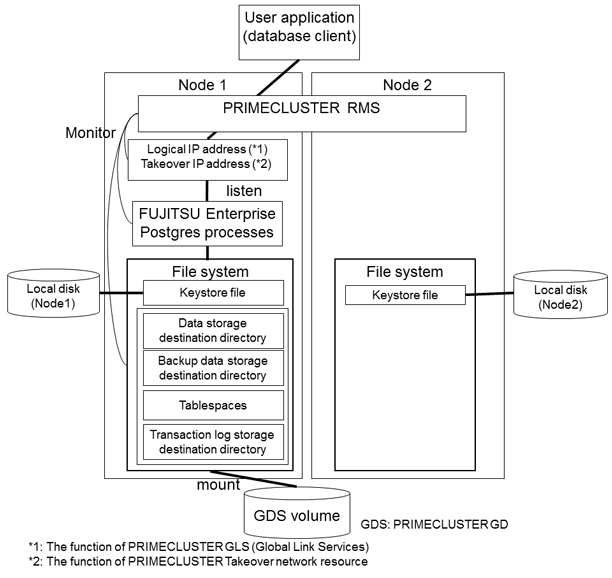
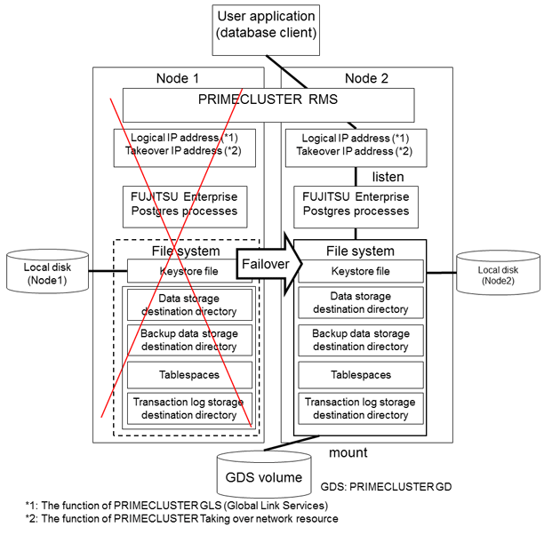

In the illustration below, the file system is on a GDS volume (shared disk), mounted on node 1 only.
The following FUJITSU Enterprise Postgres resources are located in this file system:
Data storage destination directory
Tablespaces
Backup data storage destination directory
Transaction log storage destination directory
A FUJITSU Enterprise Postgres process waits for connections of user applications that access the database, on a logical IP address activated on node 1 only or on a takeover IP address.

When an error is detected on node 1, PRIMECLUSTER mounts the file system on node 2, and activates the logical IP address or the takeover IP address on it. The FUJITSU Enterprise Postgres process is also started on node 2. Since the logical IP address or the takeover IP address remains unchanged, the user application can access FUJITSU Enterprise Postgres process on node 2 simply by re-establishing the database connection.
